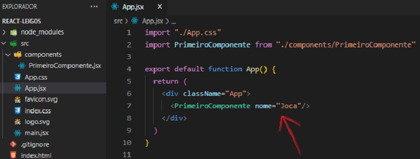
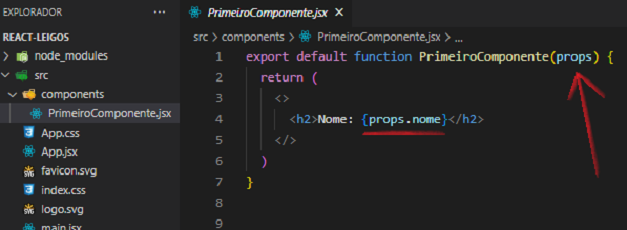
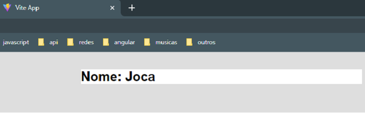
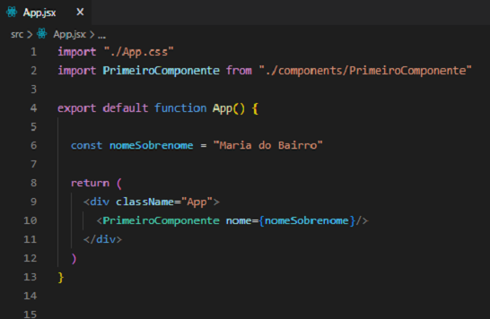
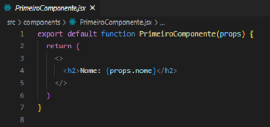
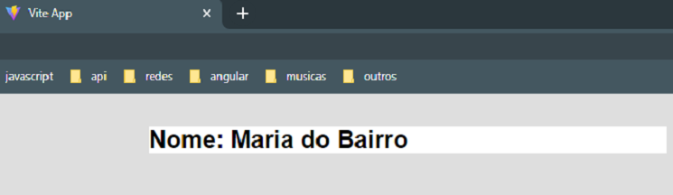
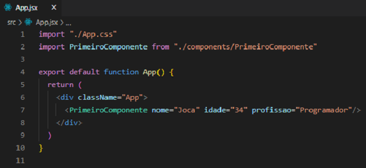
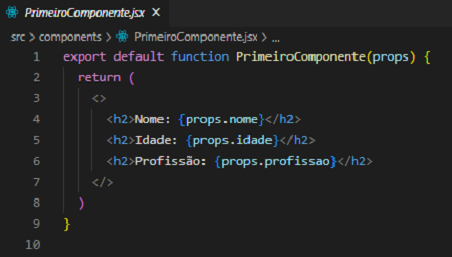
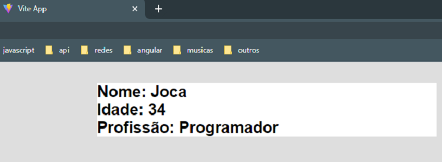
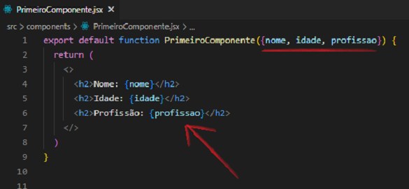

Props é um recurso que utilizamos quando queremos passar valores de um componente para outro.
Nesse primeiro exemplo queremos passar o valor string Joca para dentro do componente PrimeiroComponente.jsx

Dentro do componente filho devemos escrever props para informar que iremos usá-las. No return a usaremos entre as chaves e com o nome que declaramos no componente pai.

No navegador teremos:

Também podemos passar uma variável como valor. Note que a variável ficará dentro de chaves:

O componente filho não é alterado:

No navegador teremos:

Agora iremos passar diversos valores do componente pai para o componente filho.

Veja que não mudou muita coisa.

No navegador teremos:

Perceba que temos o comando props escrito diversas vezes. Temos uma forma de "enxugar" essa repetição. Utilizaremos um recursos chamado Destructuring.
Faremos poucas mudanças. Apagaremos a palavra props de todos os lugares. Dentro dos parênteses, após PrimeiroComponente, o nome dos valores fica entre chaves.

E teremos a mesma saída no navegador: